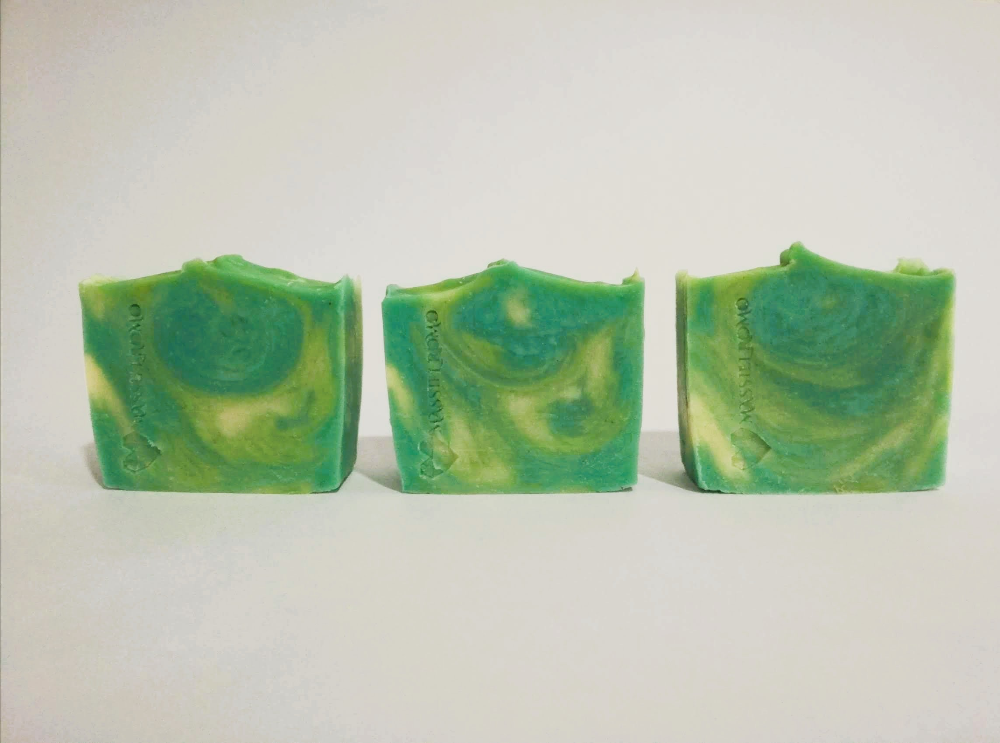

Facial y Corporal • 200 gr1. Jabón artesanal flor de Japón
Elaborado mediante saponificacion en frio con aceites vegetales de oliva, almendras, coco, ricino, cera de abeja, manteca de mango y vitamina E. La flor de Japon aporta propiedades acondicionadoras y suavizantes, ayudando a mantener la piel hidratada y flexible, mientras brinda una sensacion calmante y reconfortante. Su delicado aroma floral convierte el bano en una experiencia de relajacion y bienestar.
$45.000
Lo quiero